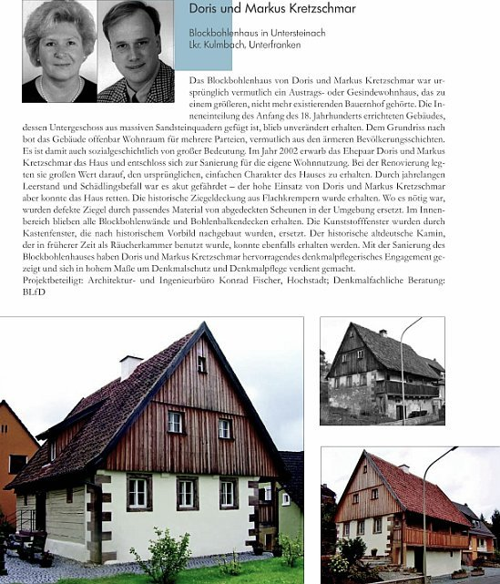

Curriculum vitae - CV / Biography - Bio Konrad Fischer
Curriculum vitae - CV / Biography - Bio Konrad Fischer 

BAYERISCHER LANDESVEREIN
FÜR HEIMATPFLEGE E.V.
Ludwigstr. 23, Rgb.
8000 München 22
Fernruf: (089) 282064
Telefax: (089) 282423
Herrn Dipl.-Ing.
Konrad Fischer
Hauptstr. 50
8621 Hochstadt a. Main
12.12.1991
H/R/f
Sehr geehrter Herr Fischer,
der Bayerische Landesverein für Heimatpflege beglückwünscht
Sie zur Verleihung der "Medaille für Verdienste um Kultur
und Tradition auf dem Lande", womit die denkmalgerechte In-
standsetzung eines wertvollen Fachwerkhauses eine öffent-
liche, ja herausragende Würdigung erfahren hat. Ihrer Planung
ist es zuzuschreiben, daß dieses Baudenkmal für das Ortsbild
von Eggenbach erhalten blieb und wieder eine Nutzung erfährt.
Dazu bedurfte es viel Einfühlungsvermögen, um den histori-
schen Bestand mit den gegenwärtigen Wohnansprüchen in Einklang
zu bringen. Dieses Beispiel spricht auch dafür, daß die
Rettung solcher Objekte möglich ist. So bin ich sicher,
daß dieses überzeugende Beispiel sowohl Anregung als auch Er-
munterung bietet für ähnliche Objekte, deren bautechnische
Erhaltung in Frage gestellt wird.
Ich wünsche Ihnen weiterhin viel Erfolg bei Ihrer verantwortungs-
vollen Tätigkeit im Umgang mit historischer Bausubstanz.
In vorzüglicher Hochachtung
Unterschrift
(Rudolf Hanauer)
1. Vorsitzender
 .
.
BAYER. LANDESAMT
FÜR DENKMALPFLEGE
POSTFACH 10 02 03 - 80076 MÜNCHEN
80539 München, 25.05.1996
HOFGRABEN 4
FERNSPRECHER 089/21 14 - 0
DURCHWAHL 21 14 - 236
TELEFAX 089/21 14 - 300
Nr. D - Md/wo
Bayerisches Landesamt für Denkmalpflege - Postfach 10 02 03 - 80076 München
Herrn Architekt Konrad Fischer
persönlich
Hauptstraße 50
96272 Hochstadt a. Main
Referenz
Zum Architekturbüro Fischer hatte ich seit 1976 fachliche Kontakte, seit ich im Bayrischen Landesamt für Denkmalpflege tätig bin. Damals leitete Dipl.-Ing. Herbert Fischer dieses Büro schon seit vielen Jahren, welches zahlreiche größere denkmalpflegerische Vorhaben abwickelte und für sein hohes fachliches Niveau sowie seine abolut zuverlässige Abwicklung der Bauvorhaben bekannt war.
In der Tradition dieses Büros wuchs der Sohn Konrad Fischer auf. Nach dem Abschluß seines Architekturstudiums an der Technischen Universität München absolvierte er das zweijährige Volontariat im Bayerischen Landesamt für Denkmalpflege, welches sonst Kunsthistorikern mit einer Dissertationsnote von 1 oder ausnahmsweise 2 vorbehalten ist. In dieser Zeit lernte Dipl.-Ing. Fischer alle wichtigen Fachbereiche der Denkmalpflege einschließlich des staatlichen Zuschußwesens mit seinen für den Architekten und Bauherrn zunächst schwer durchschaubaren Rechtsvorschriften und Abwicklungsmodalitäten kennen. Längere Zeit arbeitete er auch in meiner Abteilung A, die damals die Bau- und Kunstdenkmalpflege einschließlich der Bauforschung und Bautechnik in ganz Bayern umfaßte. Hier erarbeitete sich Herr Fischer durch aktive Teilnahme an mehreren Projekten Vorbereiten der Untersuchungen und maßnahmenbegleitend unter meiner Anleitung in Zusammenarbeit mit Gebietsreferenten ein umfangreiches Wissen im technischen Bereich von Sicherungen alter Bausubstanz zusätzlich zu seinen entwerferischen Kenntnissen.
Nach seinem Ausscheiden aus unserer Behörde führte er das Architekturbüro in der alten Tradition, aber auch mit neuen Impulsen. Das Büro entwickelte eine ausgefeilte Planungstechnik. Auf diesem know-how beruhen vorbildliche und vor allem preisgünstige Instandsetzungsmaßnehmen. Es ist daher kein Zufall, daß seine Bauvorhaben in überdurchschnittlichem Maße Auszeichnungen - allein drei Denkmalschutzmedaillen - zugesprochen bekamen.
Zwei dieser Vorhaben erlebte ich aus nächster Nähe als Partner der zuständigen Referenten und als Beurteiler der Baugeschichte und Technik der Maßnahmen:
Bamberg, Mühlwörth 6 und Eggenbach, Nr. 2. Mühlwörth 6 erschien abbruchreif. Im Normalfall wäre nur noch die Fassade stehen geblieben und ein teurer Neubau entstanden. Fischer erarbeitete sich den Überblick, konnte sehr viel der alten Substanz durch geschickte Planung retten, die Förderungsrichtlinien zugunsten des Bauherrn sehr gut durch sachkundige Verhandlungen ausschöpfen und eine preiswerte Instandsetzung erreichen. Heute steht ein schmuckes und gebrauchstaugliches Haus da, welches seine historischen Qualitäten in vollem Umfang bewahrt hat.
Das andere Vorhaben ist Eggenbach, ein sehr vollständig erhaltenes bäuerliches Anwesen von besserem Bauzustand, welches nach seiner Instandsetzung ein Vorzeigeobjekt im Regierungsbezirk Oberfranken wurde. Auch hier konnten die Baukosten dank des technischen know-how niedrig gehalten werden.
Die große Zahl der späteren erfolgreich abgewickelten Vorhaben, oft anspruchsvolle Instandsetzungen wertvoller Denkmäler, konnte ich nicht unmittelbar mitverfolgen. Viele wurden außerhalb Bayerns durchgeführt.
Architekt Konrad Fischer ist nicht nur einer der wenigen versierten Fachleute im Bereich der Beurteilung und kompetenten Instandsetzung alter Bausubstanz (in diesem Fachgebiet gibt es bekanntlich nur sehr wenige umfassend und auch in der Praxis bewanderte Experten); er hat sich in den ganzen Jahren seiner beruflichen Praxis auch unermüdlich und ehrenamtlich für kulturelle Belange eingesetzt. Davon zeugen seine vielen Vorträge, die von ihm initiierten Veranstaltungen und Fachausschüsse der Deutschen Burgenvereinigung, Gremien, die nicht zuletzt dank seiner Initiative und Tatkraft eine immer größere Rolle in der Fachwelt spielen.
Unterschrift
(Dr. Gert Th. Mader)
Abteilungsleiter
Arch.-büro K. Fischer
Hauptstr. 50
96272 Hochstadt/Main
Halle, 14.05.1996
Lö/Na
Sehr geehrter Herr Fischer,
Ihrer Bitte, die planerischen Leistungen Ihres Büros in unserem Zuständigkeitsbereich einzuschätzen und Ihnen dieses schriftlich zur Kenntnis zu geben, kommen wir gerne nach.
Hervorheben möchten wir die Leistungen bei den Sicherungs- und restauratorischen Instandsetzungsarbeiten als auch den gestalterisch anspruchsvollen Ausbauarbeiten auf Schloß Neuenburg bei Freyburg. Hier handelt es sich um ein Baudenkmal von nationalem Rang und demzufolge ein Objekt, wo die Zusammenarbeiten zwischen Planer und Landesamt für Denkmalpflege von besonderer Intensität war und ist. Mit dem erst kürzlich vollendeten 3. BA stehen jetzt bereits große Teile der Burg und des Schlosses der Öffentlichkeit zur Verfügung und dieses in beeindruckender Qualität.
Es muß an dieser Stelle auch betont werden, daß alle Kostenplanungen, die von Ihrem Büro planmäßig aufgestellt wurden, dann in der Ausführung auch ihre Bestätigung fanden, was von außerordentlicher Bedeutung für den bisherigen Bauablauf war.
Ein weiteres herausragendes Objekt ist das von Ihrem Büro beplante Geleitshaus in Weißenfels. Auch hier handelt es sich um ein herausragendes Baudenkmal (16. Jh.) mit überdurchschnittlichem Schadensbild bei einem sehr komplizierten Gefügebau.
Die bisher erbrachten Leistungen Ihres Büros sind ähnlich positiv zu bewerten wie bei dem oben genannten Objekt.
Es gäbe hier noch einige weitere Objekte zu benennen, wo Ihre Mitarbeit positiv zu bewerten ist. Wir möchten zusammenfassend feststellen, daß die von Ihnen erbrachten Planungsleistungen im denkmalpflegerischen Sinn ohne jede Beanstandung unsererseits und im technischen Bereich von hoher Solidität und Zuverlässigkeit gekennzeichnet waren und sind.
Mit freundlichem Gruß
Unterschrift
i. A. Dipl.-Ing. Lösser
Gebietskonservator
Alter Markt 27 „Goldener Pflug“ 06108 Halle/Saale
Telefon (0345) 23100-0 - Telefax (0345) 23100-15
Kirchplatz 5, 96247 Michelau
Tel. 09571/982020, Fax 09571/982022
22. Mai 1996
Referenz
Herr Architekt Dipl.-Ing. (Univ.) Konrad Fischer wohnt im Bereich des Dekanatsbezirkes Michelau. Sein Vater hat im Kirchenkreis Bayreuth zusammen mit der Evang.-Luth. Kirche in Bayern sehr viele Projekte abgewickelt und Kirchen sowie Pfarrhäuser sowohl neu errichtet als auch renoviert.
Nach dem Tod seines Vater im Jahr 1979 übernahm Herr Konrad Fischer das Architekturbüro, seit 1984 selbständig. Seither hat er im Bereich des Dekanatsbezirkes Michelau insgesamt 23 kirchliche Neubau- oder Instandsetzungsmaßnahmen von der Bestandsaufnahme über die Planung bis zur Bauleitung betreut.
Unter diesen Maßnahmen waren die Instandsetzungen und Neuerrichtungen von Gemeindehäusern bzw. Gemeinderäumen u. a. in Gemünda, Michelau, Neuensorg und Schottenstein.
Bei Pfarrhäusern sind zu nennen die größeren Instandsetzungen in Lichtenfels und Schney.
Besondere Verdienste hat Herr Konrad Fischer sich bei der Instandsetzung von Kirchen erworben. Nahezu alle Kirchenrenovierungen im Dekanatsbezirk Michelau seit 1979 standen unter seiner Leitung, darunter die einer ganzen Reihe alter, denkmalgeschützter und besonders sensibel zu restaurierenden Kirchen z. B. in Buch am Forst (14. Jh.), Gemünda (16./18. Jh.), Gleußen (14. Jh.), Obristfeld (18. Jh.) oder Schney (15. Jh.). Die bedeutende Kirche in Lahm/Itzgrund von 1732 mit der berühmten Herbst-Orgel gehört ebenso dazu wie die Schloßkirche in Strössendorf aus dem 16. Jh.
Herr Fischer hat dabei die Tradition des Architekturbüros seines Vaters, das auf Denkmalspflege spezialisiert war, qualifiziert und fundiert weitergeführt. Vor allem zeichnen ihn eine große Sachkenntnis im Bereich der Renovierung denkmalgeschützter Bauten aus sowie ein sicheres Stilempfinden.
In der Zusammenarbeit von Herrn Fischer mit den Kirchengemeinden und dem Dekanatsbezirk gab es bei den genannten Maßnahmen keine Probleme.
Ergänzend sei darauf hingewiesen, daß die Familien Fischer jun. und sen. nicht nur für die Kirche gearbeitet, sondern sich schon immer auch im Leben ihrer Kirchengemeinden engagiert haben.
Unterschrift
(Wilfried Bauer, Dekan)
Die Oberbürgermeisterin
Architekturbüro Fischer
Herrn Fischer
Hauptstr. 50
96272 Hochstadt/Main
Weißenfels, den 3.12.1997
Sehr geehrter Herr Fischer,
bei der Sanierung des historischen Weißenfelser Geleitshauses war Ihr Architekturbüro mit der Bauplanung und -betreuung beauftragt und hat diese zu unserer vollsten Zufriedenheit ausgeführt.
Das 1552 erbaute Geleitshaus ist im November 1632 in die Geschichte eingegangen, als hier der in der Schlacht bei Lützen gefallene schwedische König Gustav II. Adolf obduziert und für seine Überführung nach Stockholm einbalsamiert wurde.
Die Wiedereröffnung des Museums im Geleitshaus möchte ich als Gelegenheit nutzen, Ihnen für Ihre ausgezeichnete Arbeit ganz herzlich zu danken, mit der Sie dazu beigetragen haben, das vom Verfall bedrohte Gebäude zu retten.
Ich wünsche Ihrem Unternehmen auch weiterhin eine gute Auftragslage, wirtschaftliche Erfolge und die Gelegenheit, mit Ihrer Arbeit Zeichen für den wirtschaftlichen Aufbau in der Region und der Stadt Weißenfels zu setzen.
Ihnen und Ihren Mitarbeitern dazu Gesundheit, Schaffenskraft und persönliches Wohlergehen.
Mit freundlichen Grüßen
(Unterschrift)
Bevier
Rathaus Markt 1 06667 Weißenfels
Tel. 0 34 43/370-201 Fax: 0 34 43/370-212
Sprechzeit: Dienstag nach Vereinbarung
Dankschreiben für Mitwirkung an Schimmel-Kolloquium
DECHEMA
Gesellschaft für
Chemische Technik und
Biotechnologie e. V.
Theodor-Heuss-Allee 25
D-60486 Frankfurt am Main
Telefon (069) 75 64-0
Telefax (069) 75 64-201
E-Mail: info@dechema.de
http://www.dechema.de
DECHEMA e.V. . PF 150104 . D-60061 Frankfurt am Main
Herrn
Dipl.-Ing. Konrad Fischer
Architektur- & Ingenieurbüro
Hauptstr. 50
96272 Hochstadt
ÖMK/Chi/cbr
08.03.2004
573. DECHEMA-Kolloquium am 26. Februar 2004
"Schimmelpilze und Bakterien in Innenräumen: Nachweis, Bewertung und Sanierung"
Sehr geehrter Herr Fischer,
wir möchten Ihnen für Ihren anregenden und interessanten Vortrag
zu unserem Kolloquium nochmals sehr
herzlich danken.
In Ihren Vorträgen und der umfassenden Diskussion mit 180 Teilnehmern wurde deutlich, daß Schimmelpilze
und Bakterien in Innenräumen weitreichende Probleme nicht nur für Mieter
und Vermieter, sondern auch für
Bauwesen, Gesundheit und Medizin verursachen. Die verschiedensten Ursachen und Maßnahmen zur Abhilfe
wurden diskutiert, und besonders deutlich wurde herausgestellt, daß hier nur branchenübergreifende,
interdisziplinäre und ganzheitliche Betrachtungen dauerhaft zum Erfolg führen. Auf dem Gebiet besteht noch viel
Forschungsbedarf, und wir werden diese Thematik auch in unseren DECHEMA-Veranstaltungen weiter verfolgen.
Mit unseren Kolloquien wollen wir Forschung, Industrie und Behörden zusammenführen, um zur Lösung
anstehender interdisziplinärer Probleme im Umfeld der Arbeit der DECHEMA beizutragen. Daß uns dies Anliegen
mit unserer Veranstaltung gelungen ist, haben wir ganz besonders auch Ihrem Engagement zu verdanken.
Wir würden uns freuen, Sie bald wieder in unserem Haus begrüßen zu können.
Haben Sie besten Dank für Ihre Mitarbeit.
Mit freundlichen Grüßen
DECHEMA
Gesellschaft für Chemische Technik und Biotechnologie e.V.
(Unterschrift)..........................................(Unterschrift)
Prof. G. Kreysa .....................................Dr. Christina Hirche
Außenbezirk Riedenburg
Ländenstr. 18
93339 Riedenburg
_____________________________________
Architektur- und Ingenieurbüro
Dipl.-Ing. Konrad Fischer
Hauptstr. 50
96272 Hochstadt
Ihre Zeichen und Nachricht vom Mein Zeichen ( bei Antwort angeben )
Tel: (09443) 9186-0 Tag 07.08.06 Bearbeiter: Bramhoff
Sehr geehrter Herr Fischer,
möchte mich bei Ihnen noch mal in Erinnerung bringen. Sie haben uns im
Frühjahr 2005 ein
Gutachten (Sanierungsvorschlag) erstellt, für die Sanierung unserer Nassräume im Erdgeschoss der
Betriebszentrale Gößelthalmühle.
Wir hatten unmittelbar nach Ihrem Gutachten erstmal "nur" mit der Sanierung der Herren-Toilette
begonnen. Wir waren - ganz ehrlich gesagt - etwas skeptisch gegenüber Ihrem Sanierungsvorschlag.
Wir konnten aber ein Jahr nach der Sanierung feststellen, dass das genau das Richtige war.
Daraufhin haben wir im Mai 2006 mit der Sanierung der Damen-Toilette begonnen. Inzwischen sind
beide Toiletten komplett saniert. [Sanierdetails] Wir sind damit zufrieden.
Ich werde Sie bei ähnlich gelagerten Problemfällen auf jeden Fall weiterempfehlen.
Anbei einige Bilder der sanierten Nassräume.
Freundliche Grüße
(Unterschrift)
Kai Bramhoff

.